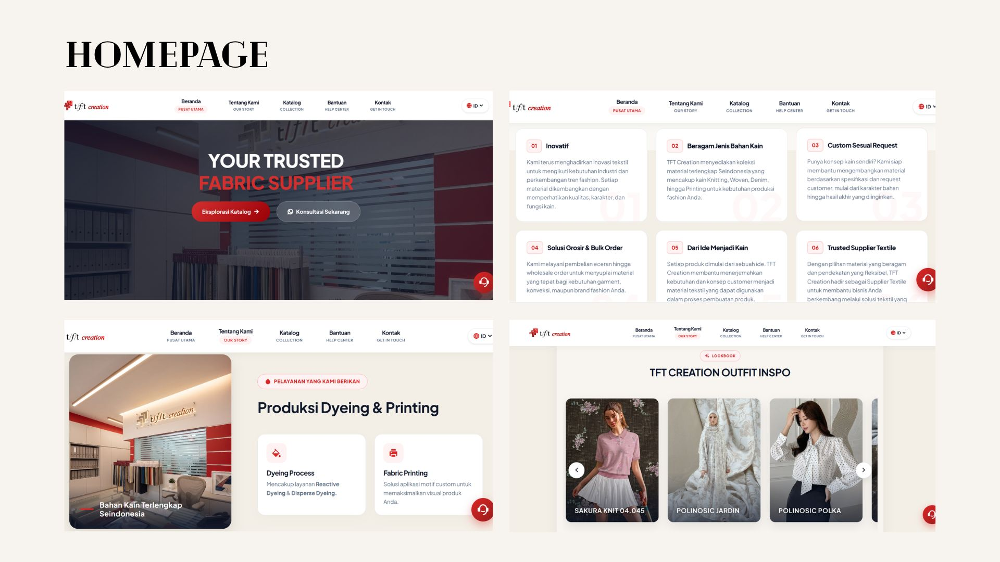
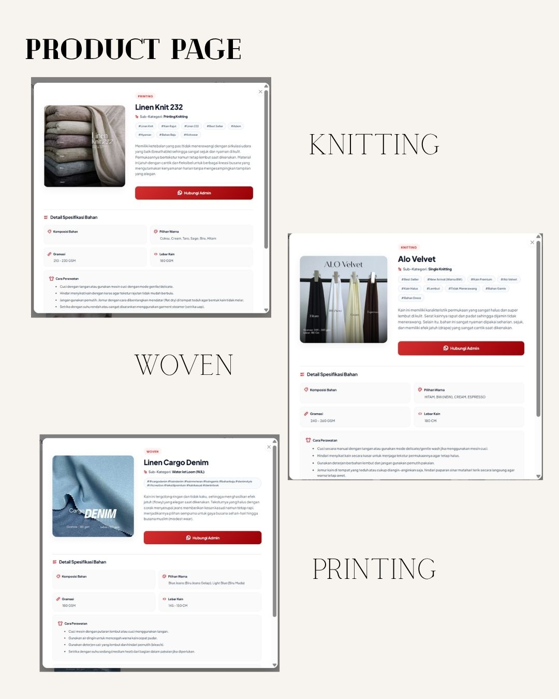
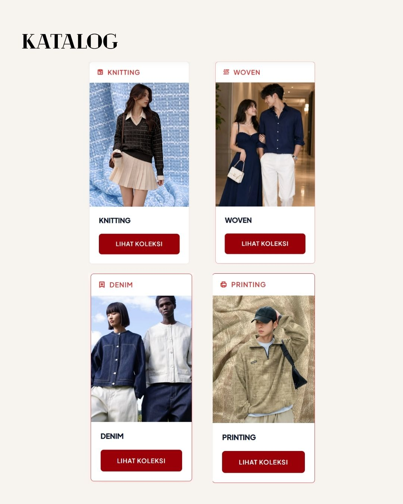
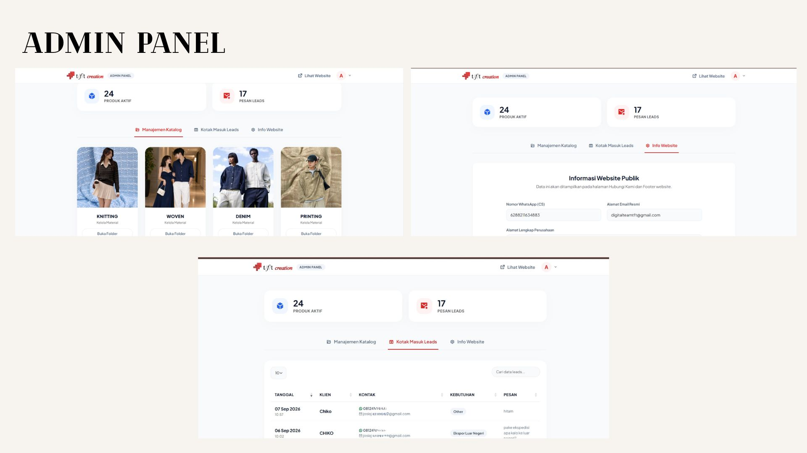

End-to-end development of the TFT Creation Textile website, from initial concept and interface development to database integration, testing, and deployment. Pengembangan *end-to-end* website TFT Creation Textile, dari konsep awal, antarmuka (UI/UX), hingga integrasi database, pengujian, dan perilisan (deployment).

I developed the TFT Creation website from concept through production as a scalable business web application. Saya membangun website bisnis TFT Creation dari tahap konsep hingga tahap produksi penuh.
The project combines responsive front-end development, interactive JavaScript, custom CSS, CodeIgniter, and MySQL to create a professional digital presence for the textile business. Projek ini mengkombinasikan pengembangan *front-end* yang responsif, JavaScript interaktif, CSS kustom, *framework* CodeIgniter, dan database MySQL untuk menciptakan profil digital profesional.



Semantic structure and responsive page architecture. Struktur semantik dan arsitektur halaman yang responsif.
Custom responsive styling and visual interaction. Pengaturan gaya kustom dan desain interaksi visual.
Interactive front-end functionality. Pembuatan fungsi interaktif pada *front-end*.
Backend framework for scalable application development. Framework *backend* untuk pengembangan sistem yang skalabel.
Relational database for dynamic website content. Sistem database relasional untuk konten dinamis.
Understanding business requirements and website objectives. Memahami visi, persyaratan bisnis, dan tujuan website.
Designing structure, layout, visual hierarchy, and interactions. Mendesain struktur, tata letak, hierarki visual, dan *flow* pengguna.
Implementing responsive front-end, backend, and database. Pengkodean *front-end*, *backend*, dan koneksi ke database.
Testing functionality, responsiveness, and compatibility. Pengujian secara utuh terhadap fungsi, responsivitas, dan bug.
Final staging, deployment, and post-launch optimization. *Staging* akhir, perilisan publik, dan optimasi performa *server*.